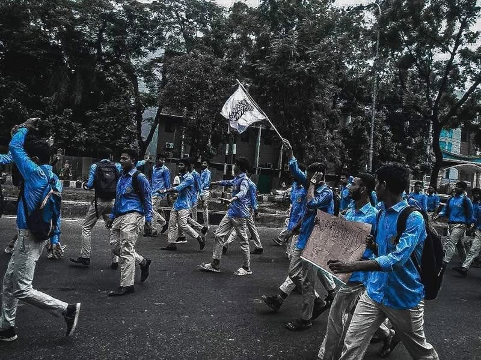

প্রতিবাদ মিছিলে জেনারেল শিক্ষার্থীদের স্বতস্ফুর্ত অংশগ্রহণ জানান দিচ্ছে- এ দেশে…
১২ জুন, ২০২২
প্রতিবাদ মিছিলে জেনারেল শিক্ষার্থীদের স্বতস্ফুর্ত অংশগ্রহণ জানান দিচ্ছে- এ দেশে মুসলমানদের ছিল, আছে এবং থাকবে, ইনশাআল্লাহ। জীবনে চলার পথে রাসূলের অনুসরণ শতভাগ নাও হতে পারে। সালাত পাঁচ ওয়াক্তের যাগায় দু'-এক ওয়াক্ত পড়তে পারে। সিয়াম ত্রিশের যাগায় দশ-বিশ হতে পারে। থাকতে পারে আরও নানান পাপাচারে সংশ্লিষ্টতা। তবুও প্রিয় রাসূলকে ভালোবাসায় সম্পূর্ণ খাদহীন, শতভাগ পিওর হওয়া সম্ভব। অসম্ভব নয় রাসূল'প্রেমে জীবন উৎসর্গকারীদের তালিকায় তদেরও নাম যুক্ত করে নেয়া।
মদ্যপ লোকটিকে বাকিরা তিরস্কার করছে দেখে রাসূল বলে উঠলেন-
" তোমরা তাকে লা'নত করো না। কারণ, আমি জানি সে আল্লাহ ও তাঁর রাসূলকে ভালোবাসে।" [সহিহ বুখারি]
সুবহানাল্লাহ!
রাসূলপ্রেমে উজ্জীবিত এসব শিক্ষার্থীদের মিছিল দেখে গায়ের পশম দাঁড়িয়ে যায়, আবেগে চোখ ভিজে আসে। কারণ, তারাও যে আমার রাসূলকে ভালোবাসে।
(সাল্লাল্লাহু আলাইহি ওয়া সাল্লাম)
